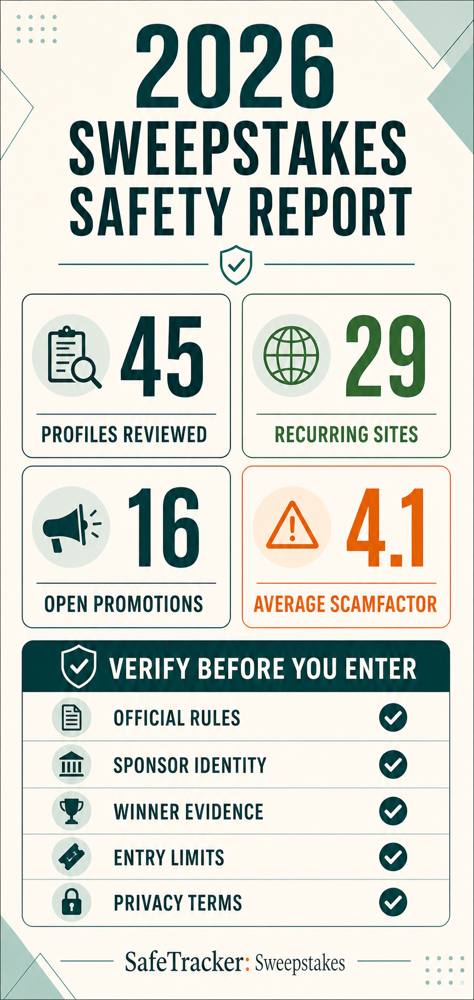

Downloadable research summary
2026 Sweepstakes Safety Report
This report is the shareable research summary behind SafeTracker’s July 2026 sweepstakes inventory. It covers 45 profiles, explains what the scores can and cannot establish, and identifies the evidence readers should verify before entering.

Executive summary
Most profiles fell in the lower-to-middle portion of the ScamFactor scale: 26 of 45 scored 4 or lower, while 40 scored 5 or lower. This does not mean that every listed promotion is safe or likely to produce a win. It means the structured review found fewer severe concerns in most records than in the small high-concern group.
The clearest cross-cutting risks were brand impersonation, uneven third-party sponsor quality, limited public fulfillment evidence, persistent marketing, and forms that can create a meaningful personal-data cost.
The inventory contains different kinds of services
The recurring inventory includes legacy operators, daily-entry sites, directories, premium directories, rewards services, globalizer networks, sampling programs, apps, niche sites, and lead-generation funnels. Those models should not be judged as though they perform the same function.
The sixteen limited promotions were scored as open records with source and prize checks, but without completed fulfillment histories. Their profiles should be revisited after closing.
How ScamFactor is calculated
ScamFactor is a weighted comparison from 1 to 10. Transparency and winner proof account for 30 percent; fulfillment and complaint signals account for 25 percent; entry model and gotchas account for 20 percent; opportunity realism accounts for 15 percent; and marketing pressure accounts for 10 percent.
A score is a research aid, not a legal conclusion, regulatory finding, or probability-of-winning estimate.
Recommendations for entrants
Start with the official rules, not the size of the advertised prize. Confirm the sponsor, free entry method, eligibility, entry limit, drawing timing, privacy terms, and what evidence exists that similar prizes have been fulfilled.
Use a dedicated inbox, avoid unnecessary data collection, and independently verify any winner notice. Never send gift cards, cryptocurrency, wire transfers, or advance payments to release a prize.
Recommendations for operators
Operators can improve trust by publishing accessible rules, dated winner information, clear account and entry requirements, direct unsubscribe and privacy controls, and contact channels that make impersonation easier to detect.
SafeTracker accepts corrections and new primary-source evidence. Paid placement does not change the displayed score.
Snapshot totals
| Measure | Result | Meaning |
|---|---|---|
| Profiles analyzed | 45 | 29 recurring sites/platforms plus 16 open promotions |
| Average ScamFactor | 4.1 | Middle-low observed concern across the full inventory |
| Scores 3 or lower | 9 | Fewer observed warning and friction signals |
| Scores 4 or lower | 26 | A majority of the July inventory |
| Scores 7 or higher | 2 | High-concern records requiring caution |
Sources and scope
- SafeTracker structured inventory generated July 26, 2026.
- Individual profile source panels and automated public-source refresh records.
- The published ScamFactor scoring methodology and correction policy.
Figures are a dated snapshot of SafeTracker’s structured inventory and may change as promotions close, sites change, and new evidence is reviewed.
Use the tracker as a second check
SafeTracker compares entry models, winner evidence, marketing pressure, and other consumer-friction signals. A profile is a research starting point—not a guarantee that every promotion linked by a platform is safe.
Compare all sweepstakes sites →